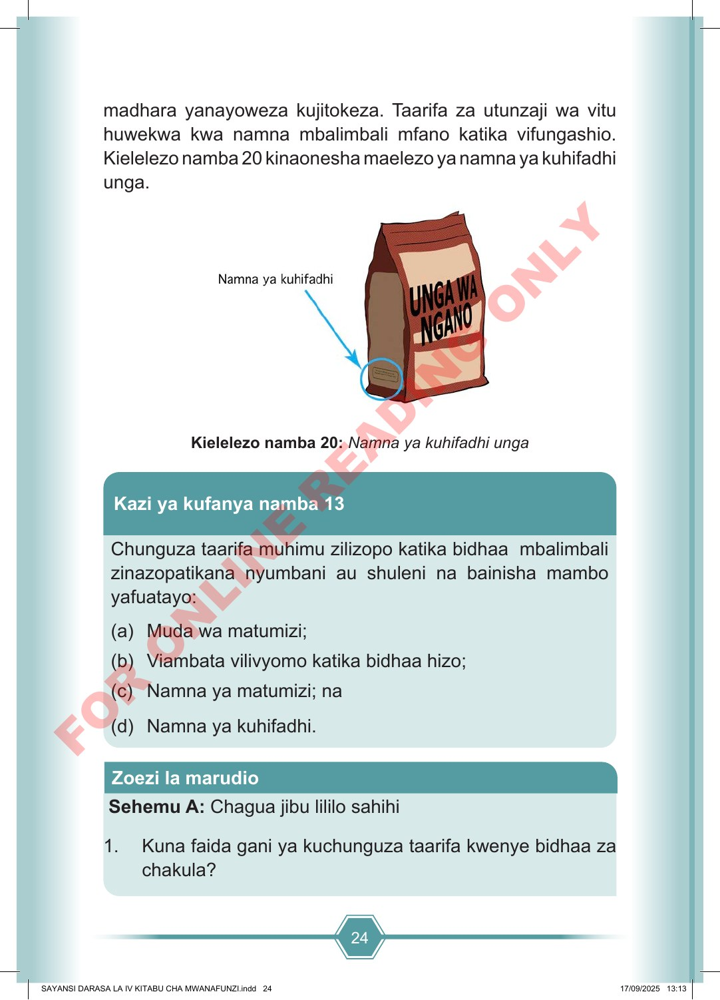

24 Zoezi la marudio madhara yanayoweza kujitokeza. Taarifa za utunzaji wa vitu huwekwa kwa namna mbalimbali mfano katika vifungashio. Kielelezo namba 20 kinaonesha maelezo ya namna ya kuhifadhi unga. Kielelezo namba 20: Namna ya kuhifadhi unga Chunguza taarifa muhimu zilizopo katika bidhaa mbalimbali zinazopatikana nyumbani au shuleni na bainisha mambo yafuatayo: (a) Muda wa matumizi; (b) Viambata vilivyomo katika bidhaa hizo; (c) Namna ya matumizi; na (d) Namna ya kuhifadhi. Kazi ya kufanya namba 13 Sehemu A: Chagua jibu lililo sahihi 1. Kuna faida gani ya kuchunguza taarifa kwenye bidhaa za chakula? SAYANSI DARASA LA IV KITABU CHA MWANAFUNZI.indd 24 SAYANSI DARASA LA IV KITABU CHA MWANAFUNZI.indd 24 17/09/2025 13:13 17/09/2025 13:13 F O R O N L I N E R E A D I N G O N L Y